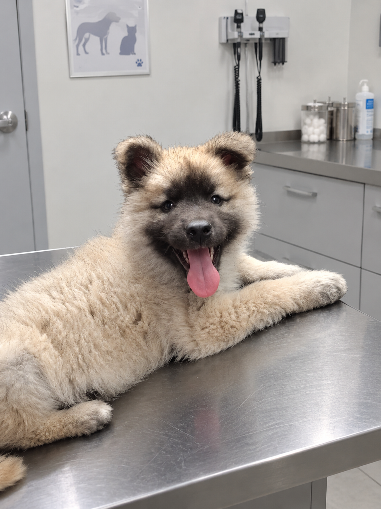
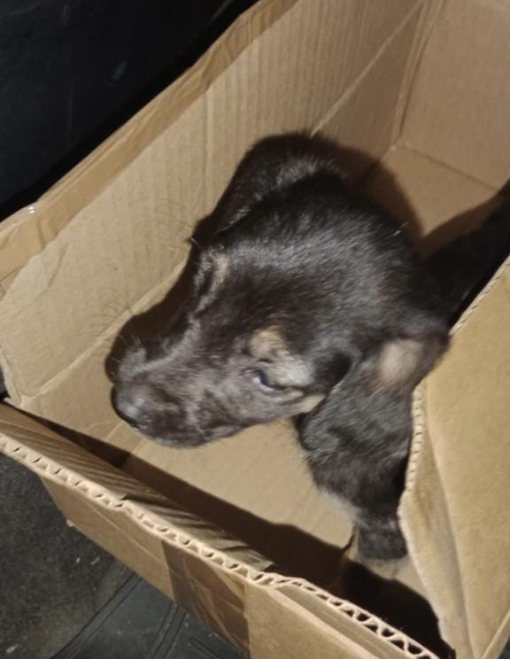
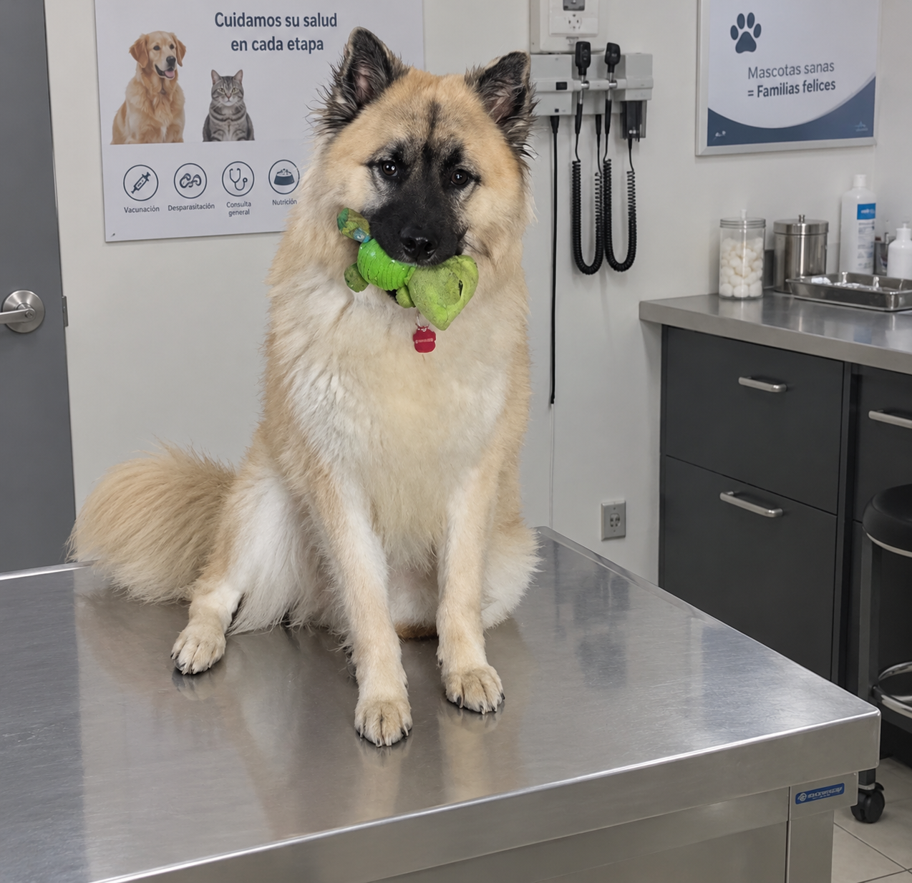
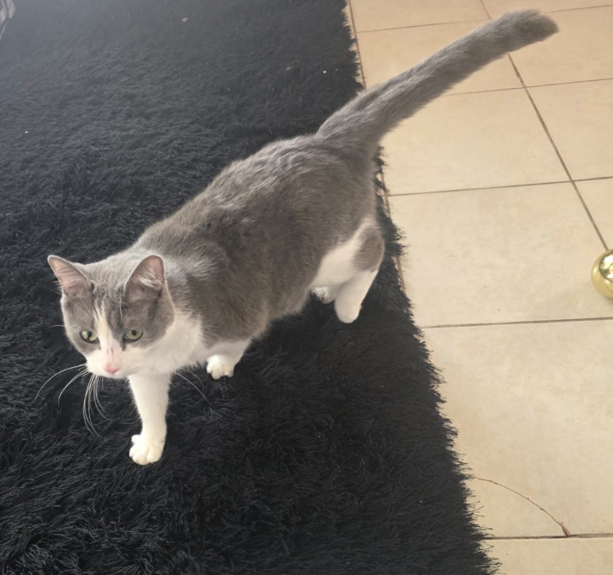

Perro
Max
Edad: 2 meses
Es un perro amigable que disfruta jugar y pasar tiempo con las personas.
Adoptar a MaxCada animal tiene una historia y merece una nueva oportunidad. Conoce a nuestros amigos y descubre todo lo que pueden aportar a tu vida.

Edad: 2 meses
Es un perro amigable que disfruta jugar y pasar tiempo con las personas.
Adoptar a Max
Edad: 1 mes
Es un cachorrito curioso y tierno que fue rescatado. Busca un hogar cálido y amoroso donde crecer sano y protegido.
Adoptar a Luna
Edad: 2 años
Es un compañero alegre que necesita una familia dispuesta a darle mucho cariño.
Adoptar a Rocky
Edad: 8 meses
Es un gatito explorador y explorador de pelaje gris y blanco, muy limpio y cariñoso que merece crecer en un ambiente lleno de cuidados.
Adoptar a MisuCompleta tus datos para expresar tu interés en adoptar una mascota. El envío de la solicitud no garantiza la adopción.
Asegúrate de contar con tiempo, espacio y recursos para cuidar a tu mascota. Toda adopción debe ser responsable y considerar las necesidades del animal.
Volver al inicio